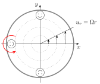
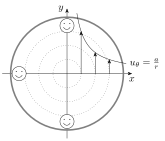

3 Canonical Flows
In this chapter we will consider simple flow configurations in which the governing equations can be simplified to allow for analytic solutions to be obtained. Analytic solutions are both useful to gain understanding of a particular problem but also to provide benchmark cases against which CFD solutions can be tested.
3.1 2D Flows
One possible simplification we can make to the full Navier-Stokes equations is to consider flows that move the fluid in 2D only, reducing the number of dimensions we need by one. In such 2D flows, the velocity field has two components which depend on two physical space coordinates and time, {\boldsymbol{v}}= (u(x,y,t), v(x,y,t),0). In this case, the vorticity field has only one non-zero component, {\boldsymbol{\omega}}= (0,0,\omega(x,y,t)).
For 2D incompressible flows, a mathematically convenient tool is to introduce a representation of the velocity field in terms of a special function, defined as follows.
The utility of the stream function is that it guarantees that the flow automatically satisfies the condition of incompressibility, and it means there is one fewer field we need to find (we now only need \psi and the pressure, p). In terms of the stream function the z-component of vorticity is: \omega = \frac{\partial v}{\partial x} - \frac{\partial u}{\partial y}= -\nabla^2 \psi. \tag{3.2}
Relation to Streamlines
We now explore the reason for the name of the stream function, showing that curves where \psi=\text{constant} are streamlines of the flow.
From the definition of the stream function Equation 3.1 we have {\boldsymbol{v}}\cdot \nabla\psi = u\frac{\partial \psi}{\partial x} + v\frac{\partial \psi}{\partial y}=0. This mean that in steady flows (where \frac{\partial \psi}{\partial t} =0 so that \frac{\partial{\boldsymbol{v}}}{\partial t}=0 too), we have \frac{D \psi}{D t}=\frac{\partial \psi}{\partial t}+{\boldsymbol{v}}\cdot\nabla\psi =0, i.e. \psi is conserved along the fluid paths. This means that in steady flows the fluid particles move along lines of constant \psi (streamlines, as defined in Chapter 1), and this explains the name ‘stream function’.
Volume flux
Another nice propert is that there is a nice relation to the volume flux across a curve connecting 2 points. The volume flux of fluid, per unit length (as we’re in 2D), across a curve between points a and b is given by Q = \int_{a}^{b} {\boldsymbol{v}}\cdot{\boldsymbol{n}}\,ds where s is the arclength along a curve between a and b and {\boldsymbol{n}}=(\partial_s y, -\partial_s x) is the normal to this curve. Substituting our expressions for the normal and the velocity in terms of the streamfunction, we obtain Q = \int_{a}^{b} \left(\frac{\partial \psi}{\partial y}\frac{\partial y}{\partial s} + \frac{\partial \psi}{\partial x}\frac{\partial x}{\partial s}\right) ds = \int_{a}^{b} \frac{d\psi}{ds} ds = \left[\psi\right]^{b}_{a} = \psi(b)-\psi(a). In other words, the difference of the streamfunction at two points tells us the value of Q for any curve connecting those two points. The fact that there is unique value for this is something that arises purely due to incompressibility in 2D!
3.2 Plane-Parallel Shear Flows
The most basic 2D flows have plane-parallel configuration in which the velocity field is everywhere in the same direction and constant along that direction, i.e. {\boldsymbol{v}}( {\boldsymbol{x}}, t) = (u (y,t), 0,0); \tag{3.3} see Figure 3.1. These flows are simple enough that we don’t even really need the stream function; the stream lines are all just lines of the form y=\text{constant}.
The incompressibility condition for such a velocity field is automatically satisfied, as \frac{\partial v_i}{\partial x_i}=0, and the nonlinear term v_j\frac{\partial v_i}{\partial x_j} is automatically zero which greatly simplifies finding solutions. Writing the Navier–Stokes equation in components, we have \begin{aligned} \underbrace{ \frac{\partial u}{\partial t}}_{\text{Function of }y,t} &= -\frac 1 \rho \frac{\partial p}{\partial x}+\underbrace{\nu \frac{\partial^2 u}{\partial y^2},}_{\text{Function of }y,t} \\ 0 &= -\frac 1 \rho \frac{\partial p}{\partial y}. \end{aligned} \tag{3.4} From the second equation we see that the pressure is independent of y, so that p=p(x,t). From the first one, we see that its dependence on x is linear, i.e. the pressure force is uniform and in the x-direction, -\nabla p/\rho = G(t) {\boldsymbol{e}}_x where G is a function of only time. This leads to the following equation \frac{\partial u}{\partial t} = G +\nu \frac{\partial^2 u}{\partial y^2}. \tag{3.5}
Inviscid Steady Plane-Parallel Flow
Let us consider a steady plane-parallel shear flow so that \partial_t {\boldsymbol{v}}=0 and \nu=0. Then we have from Equation 3.4 that 0= -\frac 1 \rho \frac{\partial p}{\partial x},\qquad 0 = -\frac 1 \rho \frac{\partial p}{\partial y}, so that the equations are satisfied for all {\boldsymbol{v}}= (u(y), 0, 0) with p=\text{constant}.
Couette Flow (surface driven)
Poiseuille Flow (pressure driven)
Consider now a steady viscous plane shear flow, with boundaries stationary and the flow is driven by a pressure gradient. Consider a plane-parallel flow, {\boldsymbol{v}}= (u(y),0,0), between two infinite plates at y=W and y=-W which are fixed (not moving); see Figure 3.3. The flow is driven by a uniform pressure gradient in the x-direction, -\frac{\partial p }{\partial x} /\rho = G where G= const.
Therefore from Equation 3.5 we have \frac{\partial p }{\partial x} /\rho = - G= \nu \frac{\partial^2 u}{\partial y^2} . The solution of this equation is u(y)=-\frac G {2 \nu} y^2 +By+C. The no-slip boundary conditions to be satisfied are u(W) =u(-W) =0. Thus B=0 and C= \frac G {2\nu} W^2, i.e. u(y) = \frac G {2\nu} (W^2 -y^2).
The volume flux can then be computed as Q=\int_{-W}^{W} u \,dy = \left[\frac{ G}{2\nu} (W^2y -y^3/3)\right]_{-W}^{W} = \frac{2 G W^3}{3\nu}\propto W^3, which shows that the mass flux is proportional to the cube of the channel width W for a given pressure gradient.
For obvious reasons the Poiseuille flow is often called channel flow. Its analogue in cylindrical geometry is a flow commonly observed in pipes/tubes or our blood vessels and here, Q\propto R^4 where R is the radius of the pipe. A video showing this can be found below.
3.3 Fluids Coursework Project Option 1
This project is entitled Poiseuille Flow at the Micro and Nanoscale, and is one of two project options you will have in this section of the module. The second will be described in Section 4.4.
Project aims
You should write an approximately 10 page report that demonstrates:
Engagement with the literature on flow through micro and nano geometries where the no-slip boundary condition is violated;
Computational results for Poiseuille flow through channels and pipes for a variety of different boundary conditions; and
Validation of code against your own analytic results as well as experimental and/or theoretical results from the published literature.
Pipe flow
A more common pressure-driven flow than channel flow is the flow of liquids and gases through pipes/tubes. For pipe flow, the natural coordinate system to consider is the cylindrical coordinates (r,\theta,z), with the z-coordinate along the centre-line of the pipe and the boundary located at a constant radius r=R (see Figure 3.5) - in this case the domain will be 0\le r\le R. We can assume that the velocity takes the form {\boldsymbol{v}}= v_z(r){\boldsymbol{e}}_z, so that, using the Navier–Stokes in cylindrical coordinates (see Appendix) and in the absence of gravity, we have: 0 = -\frac{1}{\rho}\frac{\partial p}{\partial z} +\nu\frac{1}{r}\frac{\partial}{\partial r}\left(r\frac{\partial v_z}{\partial r}\right) where we have applied the boundary condition of no slip u(R)=0 and smoothness at r=0, i.e. \frac{\partial v_z}{\partial r}=0 there.
As an exercise you should show that when you haven no-slip v_z(r=R)=0 the analytic solution to this equation is v_z = \frac{G}{4\nu}(R^2 - r^2) where G=-\frac{1}{\rho}\frac{\partial p}{\partial z} is the (constant) imposed pressure gradient. From this you should be able to find the volume flux and show that it is \propto R^4.
Slip
A generalisation of the no-slip condition is the Navier slip (known as Maxwell slip for gases) condition which states that the tangential velocity at a solid surface is linearly proportional to the shear stress imposed upon this boundary. The coefficient of proportionality is known as the ‘slip length’ \ell; when \ell=0 the no-slip boundary condition is recovered.
For the case of a plane-parallel shear flow, in the geometry considered above, the Navier slip condition is \ell \frac{\partial u}{\partial y} = \pm u\qquad \text{at}\qquad y=\mp W and replaces the tangential part of the no-slip boundary condition. This mean we still have zero velocity normal to the boundary v=0, due to impermeability, but now u\neq0 in general, just as happens for a free slip condition. Note that the \pm comes from the fact that the shear stress {\boldsymbol{n}}\cdot{\boldsymbol{S}}\cdot{\boldsymbol{t}} depends on the normal vector to a boundary
In cylindrical coordinates this condition takes the form \ell \frac{\partial v_z}{\partial r} = -v_z\qquad \text{at}\qquad r=R
Generally, at large scales the no-slip boundary condition provides exceptionally accurate results (e.g. for aeronautics); however, as one goes to micro- and nano-scales, large deviations are observed, both experimentally and from molecular simulations, for the flow of both gases and liquids. This suggests the slip length is of the order of microns or below. The easiest system in which to measure these deviations is pipe flow, where one can measure the flux through a tube and compare to analytic solutions obtained with different boundary conditions. This has become a particularly hot-topic due to the possibility of using carbon nanotubes in a membrane to filtrate seawater into drinking water - see article by Reese 2011 (in the Reading List).
Project Ideas
The suggestions below are intended to give you ideas of what can be done, but you should feel free to follow your own path if you wish.
A starting point for this project is to compute Poiseuille flow in a channel, as considered within the Week 3 Workshop. Two extensions that should be considered are to consider flow through a pipe, rather than a channel, and to change the boundary conditions to allow for slip. You will then be able to compare your results to experiments, such as the volume flux data provided in Whitby et al 2008 (see Reading List below).
Pipe Flow
Suggested tasks:
Derive an analytic solution for 3D axisymmetric flow and use this to calculate the volume flux.
Extend your 2D code to 3D axisymmetric flow and ensure agreement with the analytic result. Note, care must be taken at r=0 as the coordinate system creates 1/r terms there. A simple way to impose \frac{\partial v_z}{\partial r}=0 there is to directly impose this equation (instead of the bulk one) by setting v_1=v_2, which is equivalent to a forward difference at this point. You can also explore other possibilities if you like.
Repeat any steps for channel flow of interest to you.
Slip
Suggested tasks:
Incorporate a Navier-Slip condition for channel flow and see how this modifies the solution (note: an analytic solution is still easily attainable) and in particular he volume flux.
Do the same for pipe flow.
Going further
For those feeling ambitious, here are some further suggestions:
Implement the non-linear slip condition derived in Thompson & Troian’s 1997 article (see Reading List), which is an extension of the Navier-Slip condition. Derive an appropriate boundary condition for pipe flow.
Use a higher order boundary condition derived for gases and see what this changes. One example is equation (7) in Lockerby et al’s 2004 article (see Reading List).
Consider the model proposed in Myers 2011, where the nanoscale effects are attributed to changes in the viscosity near the wall, with no-slip retained.
Reading List
Articles below are just a starting point for your investigations and should not be considered exhaustive:
Reese, J., 2011. ‘Water, water, everywhere, Nor any drop to drink’?. Physics World, 24(06), p.28.
Popular article about the use of molecular dynamics simulations to aid in the development of filtration technologies based on carbon nanotubes.Lauga, E., Brenner, M. and Stone, H., 2007. Microfluidics: the no-slip boundary condition. Springer handbook of experimental fluid mechanics, pp.1219-1240.
Good background/historical perspective for the no-slip boundary condition and a good source of references. Sections 1-3 are most relevant.Lauga, E. and Stone, H.A., 2003. Effective slip in pressure-driven Stokes flow. Journal of Fluid Mechanics, 489, pp.55-77.
Consideration of slip in pipes caused by alternating regions of no-slip and no-shear (probably induced by trapped gas at the solid).Whitby, M., Cagnon, L., Thanou, M. and Quirke, N., 2008. Enhanced fluid flow through nanoscale carbon pipes. Nano letters, 8(9), pp.2632-2637.
Experimental measurements of flow through carbon nanotubes.Thompson, P.A. and Troian, S.M., 1997. A general boundary condition for liquid flow at solid surfaces. Nature, 389(6649), p.360.
Extension of the Navier-Slip boundary condition to a non-linear equation.Lockerby, D.A., Reese, J.M., Emerson, D.R. and Barber, R.W., 2004. Velocity boundary condition at solid walls in rarefied gas calculations. Physical Review E, 70(1), p.017303.
Consideration of potential slip conditions at the solid boundary of a gas flow.Myers, T. G., 2011. Why are slip lengths so large in carbon nanotubes?. Microfluidics and nanofluidics, 10(5), pp.1141-1145.
A model using no-slip but accounting for nano-effects via a thin layer of fluid attached to the solid that has a different viscosity.
3.4 Circular Flows
Similar to the plane parallel shear flows in which velocity is a function of one Cartesian coordinate only, one can consider flows with circular streamlines. Again, this leads to simple enough situations that we don’t need to use the full stream function \psi.
We consider cylindrical polar coordinates (r,\theta,z) with 2D flow in the (r,\theta)-plane. Here, the power of using vector calculus becomes apparent, as the vector equations are valid in all coordinate systems and the relevant operators can quickly be looked up when required (they are in the Appendix)
Circular flows
Let us consider a steady 2D flow, {\boldsymbol{\omega}}= (0,0,\omega), such that in polar coordinates the velocity depends only on the radius and not on the polar angle, {\boldsymbol{v}}= {\boldsymbol{v}}(r) where r =\sqrt{x^2+y^2}. An example of such a flow is shown in Figure 3.6.
From the incompressibility condition, with {\boldsymbol{v}}={\boldsymbol{v}}(r) = v_r{\boldsymbol{e}}_r + v_\theta {\boldsymbol{e}}_\theta, \nabla\cdot{\boldsymbol{v}}= \frac{1}{r}\frac{\partial (rv_r)}{\partial r} + \frac{1}{r}\frac{\partial v_{\theta}}{\partial\theta} = 0, we find that the radial component of the velocity field is zero everywhere in physical space, as v_r\propto r^{-1} would mean there is a source of mass at r=0, which there is not. We have {\boldsymbol{v}}= v_\theta (r) \, {\boldsymbol{e}}_\theta, so that the Navier–Stokes equations become: - \frac{v_\theta^2}{r} = -\frac{1}{\rho}\frac{\partial p}{\partial r} 0 = -\frac{1}{\rho r}\frac{\partial p}{\partial \theta} + \underbrace{\nu\left( \frac{1}{r}\frac{\partial}{\partial r}\left(r\frac{\partial v_\theta }{\partial r}\right) -\frac{v_\theta}{r^2} \right)}_{\text{function of }r\text{ only}}, As \frac{\partial p}{\partial \theta} is a function of only r, to keep p single valued we must have \frac{\partial p}{\partial \theta}=0. Otherwise, if \frac{\partial p}{\partial \theta}=f(r), for some function f(r), then p=f(r)\theta+\text{constant}, which would be multi-valued.
If we make the further assumption that the flow is inviscid \nu=0 then we are simply left with - \frac{v_\theta^2}{r} = -\frac{1}{\rho}\frac{\partial p}{\partial r}, so that any v_\theta(r) satisfies the equations and can then be used to find the pressure distribution, as if often the case for inviscid flow.
The vorticity is then {\boldsymbol{\omega}}= \frac{1}{r} \frac{\partial (r v_\theta)}{\partial r} {\boldsymbol{e}}_z. which has an axis in the z-direction (‘out of the page’) as we would expect for flow confined to the (r,\theta)-plane.
Solid Body Rotation
Consider the circular streamlines generated by the velocity field v_{\theta}(r) = \Omega r.
With this velocity, the fluid moves as a rigid body, so that there is local rotation, i.e. the vorticity is non-zero: \omega = 2\Omega and is twice the angular velocity \Omega, as expected. Therefore, there is local rotation, see Figure 3.7, and fluid particles on the circular streamlines rotate.
The pressure distribution can then be calculated as \frac{\partial p}{\partial r} = \rho v_{\theta}^2/r= \rho \Omega^2 r \qquad\rightarrow\qquad p = \rho \Omega^2 r^2/2 + C where C is a constant.
A video showing rigid body rotation can be found below.
Point Vortices
A point vortex is a useful idealisation in which we consider all of the vorticity to be concentrated at a point. The velocity field is then v_{\theta}(r) = \frac{a}{r}.
Interestingly, we see that with this velocity field, the flow outside the singularity at the origin is irrotational \omega = \frac{1}{r}\frac{\partial (r v_{\theta})}{\partial r} - \frac{1}{r}\xcancel{\frac{\partial v_r}{\partial \theta}} = 0, i.e. there is no local rotation in the flow field. The velocity field then looks as shown in the first panel of Figure 3.7, with fluid particles on the circular streamlines retaining a fixed orientation.
However, if we can use Stokes’ theorem to show that a point vortex has a singular vorticity which is located at the origin. Taking a circular contour of radius R around the origin we have that the circulation \Gamma is given by: \Gamma = \oint_{C} {\boldsymbol{v}}\cdot d\boldsymbol{\ell} = 2\pi R v_{\theta} = 2\pi a so that using Stokes’ theorem, we find \Gamma = \int_{A} {\boldsymbol{\omega}}\cdot{\boldsymbol{n}}\,dA = 2\pi a\neq 0. However, we know that the flow is irrotational for r>0, so we must have all of the vorticity concentrated at the origin \omega = \Gamma \delta({\boldsymbol{x}}) = 2\pi a \delta({\boldsymbol{x}}).


The pressure distribution, satisfies the r-component of the steady state Euler equation \frac{\partial p}{\partial r} =\rho v_{\theta}^2/r = \rho a^2/r^3 \qquad\rightarrow\qquad p = p_{\infty}-\rho a^2/ (2r^2) where p_{\infty} is the constant pressure value ‘at’ infinity.
A video showing this motion can be found below.